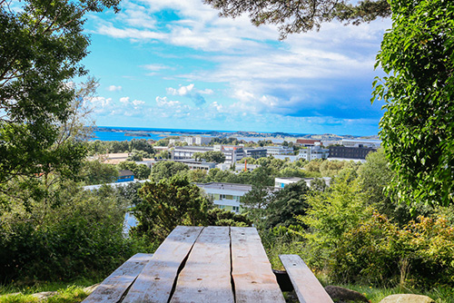
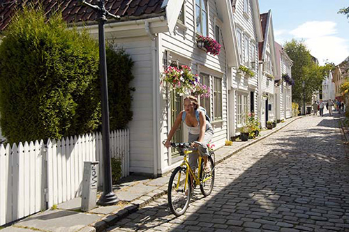
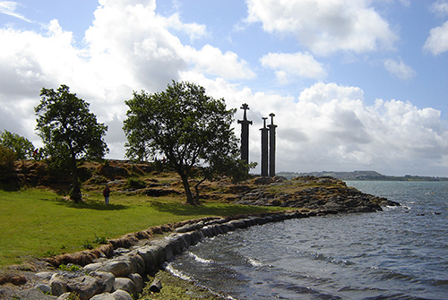
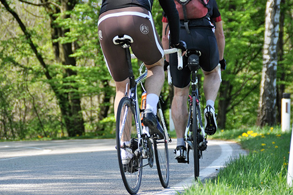

Madla Route
Distance: 10,5 km
Time: 38 min
Roadtype: Asphalt
The area is mostly wooded but there are several places that offer spectacular views. Starts pretty mellow, then gets steeper and has a few drops. Rowdy little downhill/freeride track. The trails all run parallel to the Fountain Place paved
road so they can be shuttled by car. From Lake Imaging Road it is a steady but not steep climb to the high point just before the intersection with Hooker Creek Trail.Sections have the tendency to get rutted out.
Difficulty: 3/5

City Route
Distance: 8 km
Time: 30 min
Roadtype: Asphalt
The exposed rock section near the bottom is a highlight of the trail giving the exposed granite slabs of Squamish a run for their money. I discovered this trail while out with my friend one day. Then it is a gradual descent or flat on to
the end of the trail at Hickory Mountain Road and Hickory Mountain Loop. Blast down Ridgeline all the way to Lake Imaging Road. Plan on this ride taking all day, it probably won't, but plan on it anyways by starting early.
Difficulty: 1/5

Hafrsfjord Route
Distance: 11,5 km
Time: 40 min
Roadtype: Asphalt/Dirt
Trail is in good shape, minus dirt bikers dusting it up some. The area can be accessed from the end of Densmore's Lane, the end of Old Petty Harbour Road and from Huntingdale Drive. From Lake Imaging Road it is a steady but not steep climb
to the high point just before the intersection with Hooker Creek Trail. Freeze-thaw cycle isn't awful, but does make this trail rather slick. The trail has good flow with some spicy sections.
Difficulty: 2/5

Hinna Route
Distance: 33,5 km
Time: 122 min
Roadtype: Asphalt
From here the trail narrows and skirts a rocky hillside. Sign is posted at entrance to warn users of features. The trails all run parallel to the Fountain Place paved road so they can be shuttled by car. The area can be accessed from the
end of Densmore's Lane, the end of Old Petty Harbour Road and from Huntingdale Drive. The climb to the top ends with a beautiful vista of Twin Lakes and the surrounding area.
Difficulty: 4/5